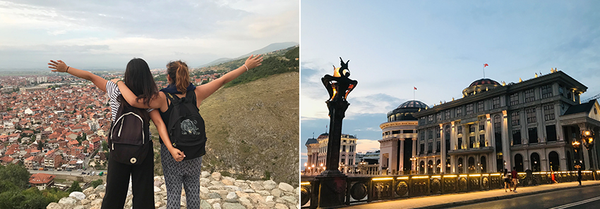
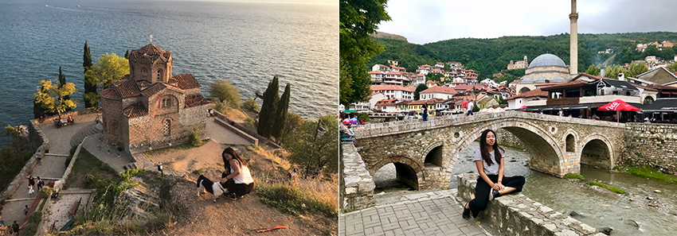
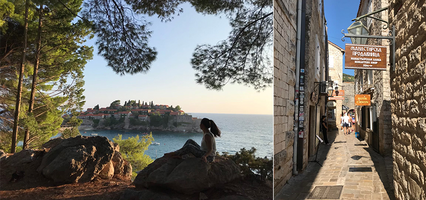
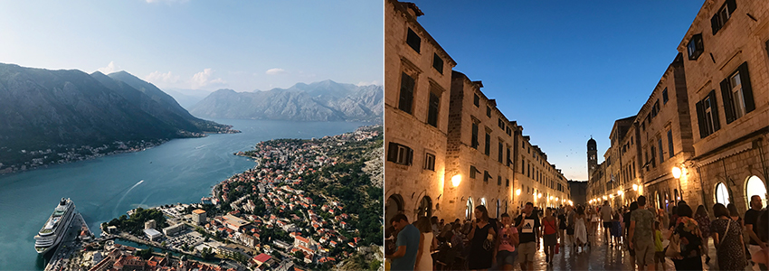
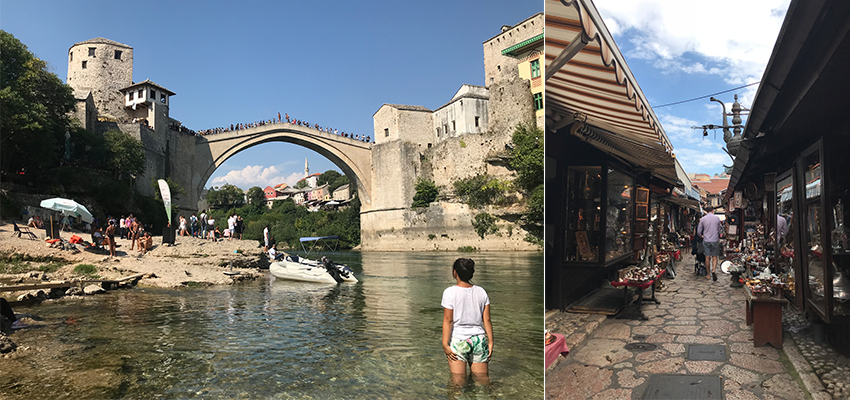
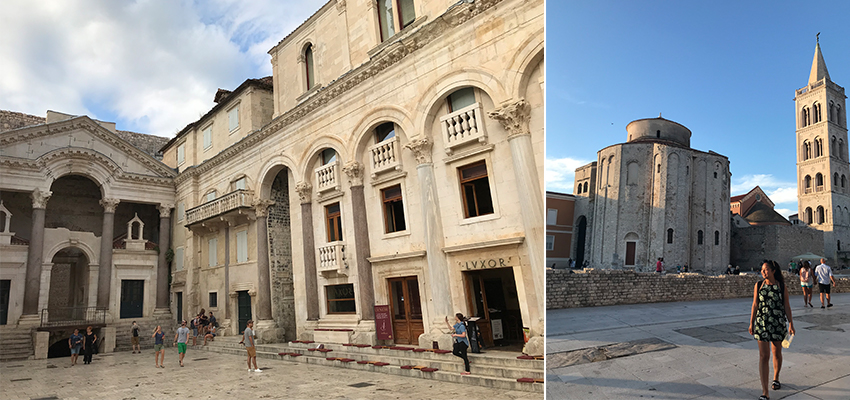
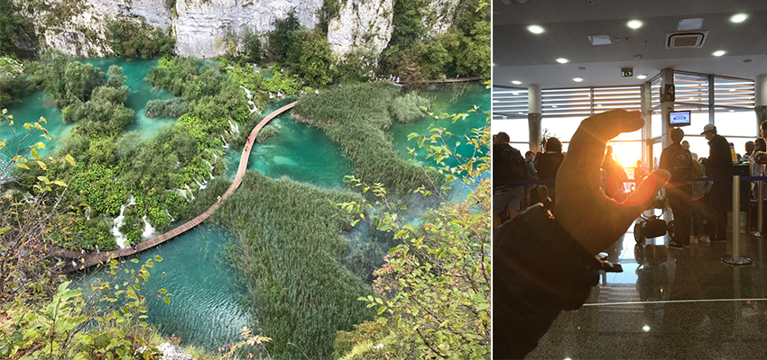
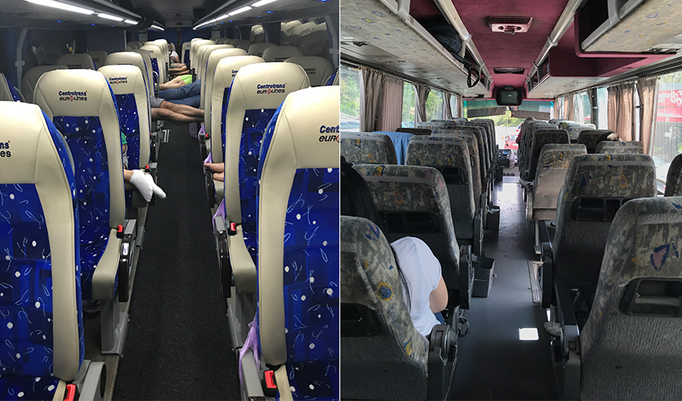

這次的旅遊國家對我來說很新鮮，當年在網路上能搜尋到的相關旅遊日誌寥寥可數，以至於只能靠想像力拼湊出來，像是沒鋪柏油的道路、手機訊號不良、交通較不發達…等，或許帶點刻板印象但在盡力蒐集完有限的資訊後，我們毅然決定在這次旅行中突破自我，嘗試當個”類”背包客，不讓行李成為旅途中的累贅。
俗話說凡事起頭難，經過無數次討論，在按下機票付款鍵後就準備出發吧！鎖定幾個有興趣的城市、規劃路線、訂旅宿，一切方向都變得清晰。首站馬其頓，飛行期間旁邊坐著一位熱愛騎重機的馬其頓大叔，開心的和我們分享觀光客不容易欣賞到的風景和不能錯過的景點，這麼愉快地旅行開端，超級讓人期待。
旅遊行程： 飛機>巴士>巴士>巴士>公車>公車>巴士>巴士>巴士>巴士>巴士>巴士>飛機
|  |
| 德國法蘭克福機場出發，就這樣一人一咖包行囊，出發了！ |
馬其頓(首都Skopje)，不同於周邊未過度開發的城鎮，這裡顯得格外摩登 |
|  |
| 馬其頓邊境(Ohrid lake)，幸運地看到美麗的夕陽映照在歐洲最古老的湖泊之一上 |
科索沃(Prizren)，無所不在的清真寺和全鎮都聽得到的祈禱文 |
|  |
| 蒙特內哥羅=黑山(Sveti Stefan Beach) |
蒙特內哥羅(Budva)，喜歡這一味的街道，上班的路途腳步一定輕快許多 |
|  |
| 蒙特內哥羅(Kotor)，非常辛苦的爬上這座山頭，而這裡讓我們駐足了好久好久 |
克羅埃西亞(Dubrovnik)，城牆內的街景，販賣當地紀念品和手作小物 |
|  |
| 波士尼亞&黑塞哥維納(Mostar)，曾被戰爭摧毀卻依舊動人的世界遺產，乘載著許多故事而吸引著人們前來回顧歷史。 |
波士尼亞&黑塞哥維納(首都Sarajevo) |
|  |
| 羅馬帝國的皇帝戴克里先為自己打造的宮殿(保留部分的建築)，超有波西米亞這部電影的風格 |
克羅埃西亞(Zadar)，一個完美度假勝地，我們在海邊度過一個悠閒不用趕景點的一天 |
|  |
| 克羅埃西亞(16湖國家公園)，真的是數一數二美的公園，但也因為太多人慕名前來而變得擁擠的觀光區 |
Home |
食：或許是剛從物價不平凡的歐洲出發，當地的物價顯得非常友善，地中海風味的食物吃起來清爽沒負擔，大多以可生食的蔬果為主，肉類不管是醃製或調味都很特別，總帶著一種特殊的香料風味
交通：許多交通資訊是到當地才比較明朗化，既沒有巴士網站可以預先購票也查詢不到發車時間，每一趟巴士都是花時間換來的，幸運的話住宿員工能提供有用的資訊縮短等待的時間。除了巴士第二重要的就是我們的雙腳，旅行必備一雙好的布鞋！因為地鐵、火車這類的鐵路還未廣泛架設，人民大多仰賴巴士穿梭在城市間。
|  |
| local巴士 |
夜間巴士場景，找到最舒適的睡眠姿勢很重要 |
住宿的部分已安全考量為主，交通便利以及評價優良為輔，在歐美國家只能睡hostel的價位在這邊能睡飯店含早餐呢，也盡量找有洗衣和烘衣機的旅店，畢竟後背包能攜帶的衣物數量非常有限。
當地人很友善簡單英文加上比畫溝通沒有太大問題，在非觀光為主的城市裡亞洲臉孔非常少，走在路上會不時有走在紅毯的錯覺。早起喝一杯手沖咖啡，按照清真寺規矩入內真的有沉澱心靈的作用，晚飯後在城內晃晃，點一杯熱茶10元台幣還能坐在河邊享用，在台灣稱做景觀餐廳，內用低消NTD 150起跳，當然要忘情享受，認真體驗身為當地人的一天。
慶幸我們在準備進入冬前旅遊，所需的衣物就不會太厚重整體輕鬆很多，很多以為未雨綢繆的所需用品，在結束這趟旅程後變得不再重要，少了一件物品旅行一樣愉快呀~這次背包客感想”三省”供大家參考：
省時：不用check-in行李和等待行李從旋轉盤出來
省心：搭乘巴士可以放身邊，不用擔心中途停站行李被偷，趕車時也不會有多餘負擔，機動性大，容量有限只需要帶必要物品
省錢：寄物Locker最小號、搭乘廉航不用加錢
這裡沒有太多華麗高樓大廈，舒適的天氣使人走在路上也不覺得難受，在這幾十天日子裡，喜歡上巴爾幹半島給人那種自然、無憂和純樸，石砌的城牆、蜿蜒的小路，沒有高樓大廈和現代化的裝置藝術，連呼吸都覺得特別輕鬆，這些未開發的美，不論是街景、大自然亦或是人，都讓人期待著有一天能回去探索更多。